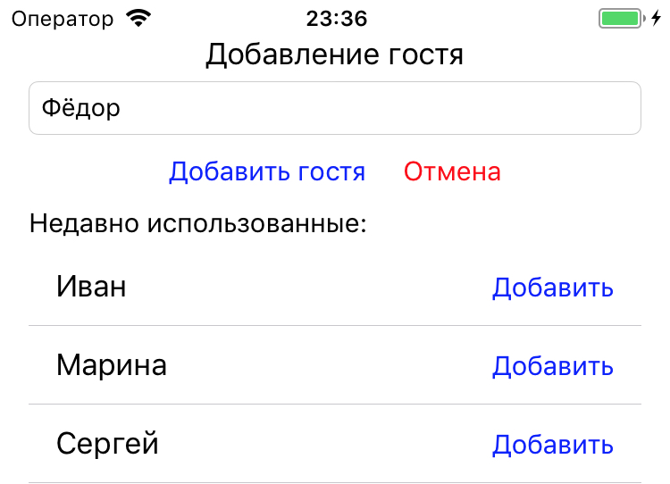
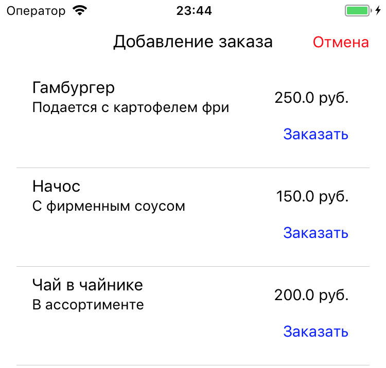
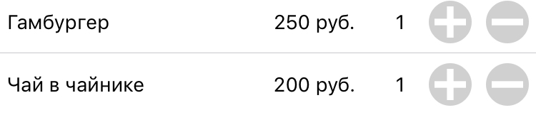
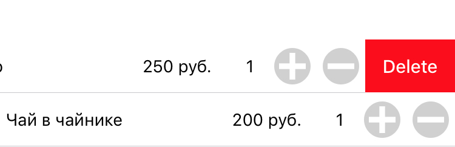
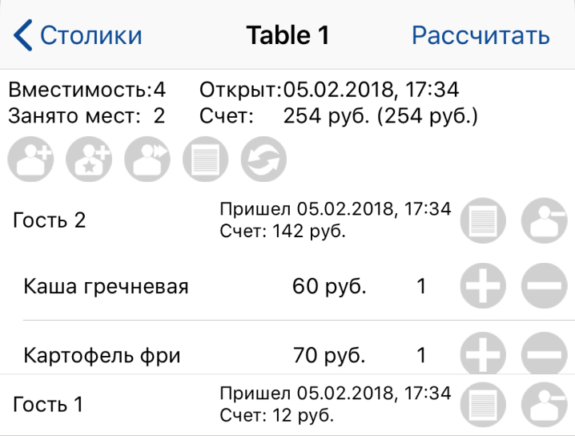
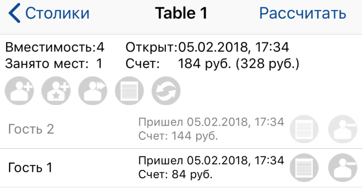
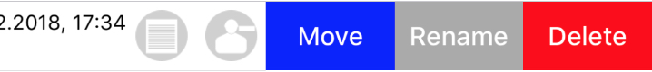
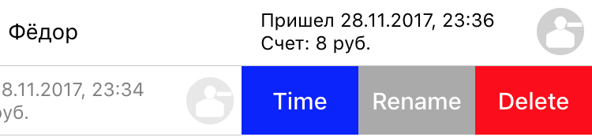

Откройте экран "Столики", затем откройте необходимый столик.
Столик открывается с приходом первого гостя. Чтобы добавить гостя, необходимо нажать на кнопку добавления. На экране столика представлены четыре основные кнопки для управления столиком:
1. Быстрое добавление гостя. При нажатии на кнопку добавляется "быстрый" гость, который именуется как "Гость N", где N - общее количество гостей за столиком (в том числе ушедшие) + 1. Например: Гость 2, Гость 3.
2. Добавление "известного" гостя. При нажатии на кнопку открывается всплывающее окно с выбором часто используемого имени и вводом имени гостя.
3. Кнопка перемещения сессии. При нажатии на кнопку, открывается окно с выбором столика, на который переместятся все гости и заказы текущего столика.
4. Кнопка добавления заказа. При нажатии откроется окно выбора пункта меню.
5. Кнопка обновления данных. При нажатии обновляется информация о текущем счете столика и гостей (для тайм кафе).

После добавления первого гостя, столик считается открытым и появляется возможность добавления заказов.
Для добавления заказа нажмите на кнопку добавления заказа.
Появится всплывающее окно с выбором пункта меню:

Для увеличения или уменьшения количества заказанной позиции, нажмите на + или - в ячейке заказа.

Для удаления заказа выполните свайп влево:

Чтобы добавить заказ конкретному гостю - нажмите на иконку меню в ячейке конкретного гостя и выберите пункт меню в появившемся окне. Чтобы посмотреть список заказов каждого гостя, нажмите на него, откроется список заказов гостя.

Изменение и удаление индивидуальных заказов осуществляется таким же образом, как изменение заказов столика.
Если Вам необходимо переместить всех гостей на другой столик, нажмите кнопку перемещения гостей и в появившемся окне выберите новый столик. Все гости и заказы будут перемещены.
Если Вам необходимо переместить одного гостя за другой столик, выполните свайп влево на ячейке гостя, нажмите на кнопку "Move" и выберите столик для переноса. Перенос воможнет только на уже открытый столик.
Чтобы закрыть гостя, нажмите на кнопку закрытия в ячейке необходимого гостя. Подтвердите действие.
ВНИМАНИЕ! После закрытия гостя, Вы не сможете его вновь активировать. Можно будет лишь изменить имя гостя, изменить время прихода и ухода, а так же удалить гостя. После закрытия гостя, вы сможете увидеть текущий счет (без учета ушедших гостей) и общий счет столика (с учетом ушедших гостей).

Чтобы отредактировать гостя, выполните свайп влево. Вы можете переместить гостя, переименовать, либо удалить его, если гость активен:

Если гость уже ушел, Вы можете так же переименовать или удалить его, а так же изменить время прихода и ухода:

Когда гости уходят, необходимо закрыть столик. После закрытия столика, данные попадут в архив и Вы сможете добавить новых гостей. Для закрытия столика нажмите на соответствующую кнопку. В появившемся всплывающем окне Вы можете закрыть столик сразу, рассчитанная стоимость попадет в архив неизмененной. Либо Вы можете округлить стоимость или применить скидку.